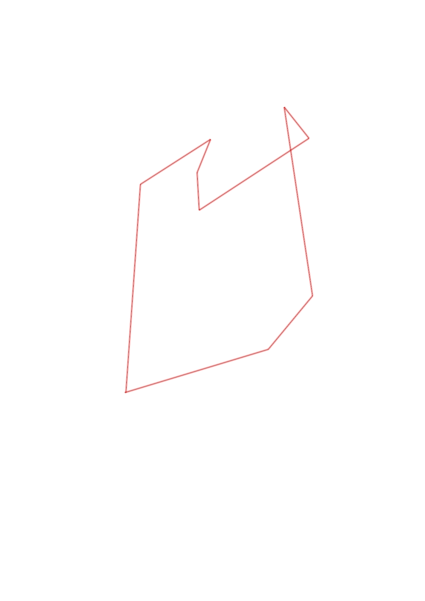
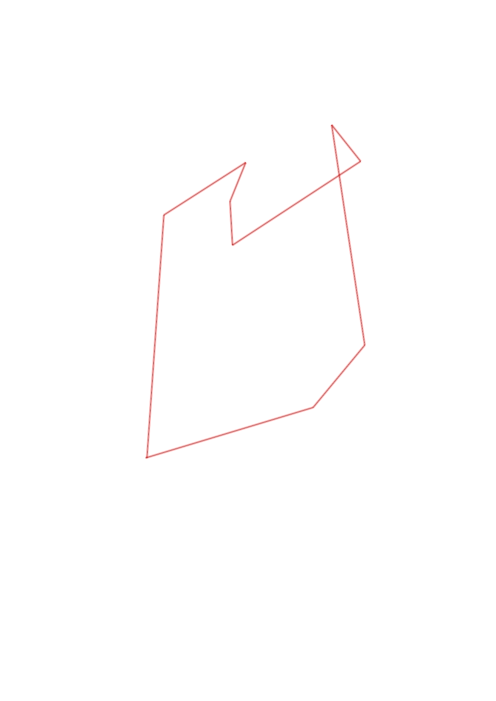

| Control |
Points |
Time Punched |
Distance |
Your Time |
Pace |
Place |
Fastest Time |
Median Time |
% Behind Fastest |
| 60 |
60 |
|
1.11 |
0:04:57 |
04:27 |
1 / 2 |
0:04:57 |
0:07:44 |
0% |
| 81 |
80 |
|
0.52 |
0:04:51 |
09:19 |
7 / 11 |
0:03:21 |
0:04:40 |
44% |
| 47 |
40 |
|
1.42 |
0:22:05 |
15:33 |
1 / 1 |
0:22:05 |
0:22:05 |
0% |
| 67 |
60 |
|
0.3 |
0:01:57 |
06:30 |
2 / 5 |
0:01:53 |
0:02:10 |
3% |
| 34 |
30 |
|
0.98 |
0:05:39 |
05:45 |
1 / 1 |
0:05:39 |
0:05:39 |
0% |
| 39 |
30 |
|
0.28 |
0:01:51 |
06:36 |
1 / 7 |
0:01:51 |
0:02:56 |
0% |
| 77 |
70 |
|
0.27 |
0:01:14 |
04:34 |
1 / 9 |
0:01:14 |
0:01:56 |
0% |
| 44 |
40 |
|
0.62 |
0:07:52 |
12:41 |
1 / 1 |
0:07:52 |
0:07:52 |
0% |
| Finish |
0 |
|
1.55 |
0:12:43 |
08:12 |
1 / 1 |
0:12:43 |
0:12:43 |
0% |
Total Distance Covered: 7.05km
Points Scored: 410
Late Penalty: -80
Final Score: 330
Total Time: 1hours 3minutes 9seconds
Efficiency: 46.81 points/km
 
